a home for pino
A Home for Pino
2019.04.02
Minamiise, Mie, Japan
We left Shimizu on a sunny morning, pushing off the dock at 6am. Early. We wanted to make sure we'd arrive at our destination on time. There was 126 nm between us and Shima Yacht harbor, a distance we needed to do in part at night. This wasn't ideal. We knew that. Many people warned us about sailing at night in these waters, but as the Japanese say: 'Shoganai' (it is what it is!). We needed to cross a big stretch of water called Enshu Nada, an area with a lot of traffic. In truth, the entire coastline is full of ships, but it gets very busy north of the Kii Peninsula.
We left Shimizu on a very sunny morning, pushing off the dock at 0600. We discussed our plans with our friends Masa and Shu from Dawntreader, they too recommended a non-stop trip because the ports between Omaezaki and Mie are few. There is the port of Fukuda 福田, located at the mouth of Ota Kawa, but the depth of the water is inconsistent and prone to silting. Locals also warned us it wasn't very yacht-friendly, and so we put an X on Fukuda.
Shu instructed us to stay 10 nm from shore, to avoid the many nets lining the coast, and to avoid small fishing vessels idling there at night. We did as told.
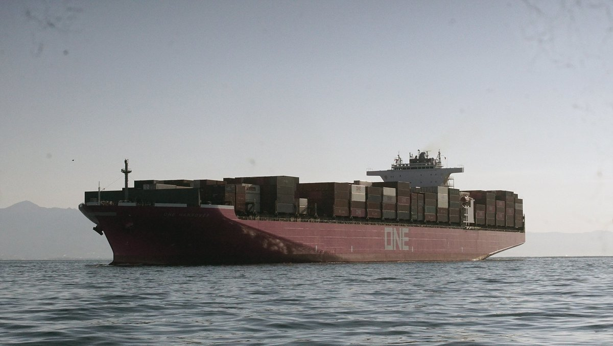Coming out of Shimizu port, we came face to face with a large container ship named One. A beautiful ship. Red, with a peculiar shape. The marina had warned us about its arrival, that its entrance into Shimizu port was scheduled at 0600 during our exit. Avoiding it was not a problem. (Interestingly enough, this is the same ship that lost 2000 containers at sea near Hawaii in 2020.)
We powered out of the harbor and into Suruga Bay. There was no wind, but we raised the mainsail anyway. We wanted to test our new slugs (what keeps the mainsail attached to the mast). It was the first time since Fiji that we'd raised a full main. The black moon shook off its wrinkles, presenting its belly to the sun.
Because it was still winter, we chose a day without wind to leave. In the transition between winter and spring the wind blows extra hard, as if it's trying to blow itself out. This makes it difficult to go west, since the strong winds come out of where we need to go. During that transition between seasons, we saw daily forecasts of 40 kn, without end.
We eventually found our window.
We moved past ships idling in the waters next to Miho, pointing our bow towards Omaezaki. As we motored on, we remembered our arrival in mainland Japan a few weeks prior. There were white caps everywhere. Today, the sea had few ripples, it was calm, mirror-like. Mount Fuji's snowed-in peak was visible. It faded gradually as we moved south, veiled by a blanket of dust and humidity.
By the time we rounded Omaezaki, light escaped the world and gave way to darkness. Many Japanese sailors we spoke to admitted hating night sailing. We used to feel that way too—funny how things change. Night sailing is relaxing. You see the stars on clear nights, ships too, a triangulation of lights describing their shape. During our shifts we kept an eye on the horizon, there were many ships, all around at all times. If near enough to us, we'd open our phones to check their positions on AIS. AIS permits us to see their course and whether or not there is a chance of collision, with it we always had plenty of time to diverge from their tracks. There are times where we'd pass between them, sandwiched in the middle. This sounds worse than it is. We were at a comfortable distance. Most ships we encountered were 30 m long, smaller than cargo ships, Japanese tankers, ferrying goods up and down the coast of Japan.
Come morning, the wind came and filled the sails. There was a good breeze coming out of Ise Bay, rising to 15-20 kn at times. Pino made good speed. We aimed to sail through Fusude Strait, a pass between the mainland and a set of offshore islets and rocks. The nets were marked with sticks, easy to see, and the pass was buoyed with red and green markers. We had no issue passing through here and encountered no one, although we heard that it may be busy at times (wouldn't recommend passing here at night).
We arrived at the mouth of Gokasho Bay, a body of water with many small inlets contouring it. Shima yacht harbor was located inside one of these arms.
As we neared land, the wind quieted, we proceeded to lower the main and to roll up the jib. I stood at the bow, keeping an eye on the various oyster and algae farms lining the channel. I had placed markers on Navionics, of the locations of newer nets, some I had researched online or grabbed off google earth screenshots.
When the marina was in sight, I sent a message to the harbormaster Mr. Oka. The marina manager at Hagoromosan marina had alerted Mr. Oka of our plans to visit earlier. It's important to give constant notices when arriving in ports in Japan, prior to departure, and when you're about to arrive.
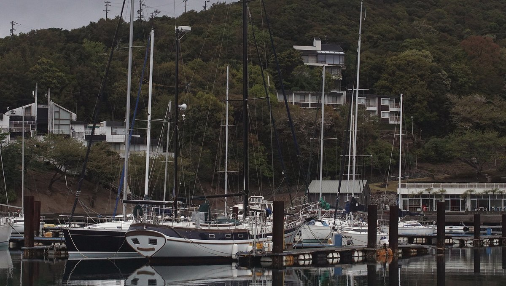When we pulled into the marina, we saw a tiny figure, hurrying onto the concrete pier at the harbor entrance.
It was Mr. Oka, riding a grey folding bicycle. He went to stand in front of a large sign, a map of the marina, finger pointing to the location of the visitor dock (34 20.173'N, 136 41.013'E). We slid past rows of moored boats, nets of aosa seaweed and made our way over to the dock. Mr. Oka took our lines and welcomed us to Mie, our new home.
This marina was home to the VOC(Vivre Ocean Club), we spotted a few boats with the name on their stern. Most sailors in Japan are racers, you can tell by the design of the boats. They take their boats out on weekends in the spring and summer, showing their ‘guests of the moment’ a good time. They also take part in local races.
The marina wasn't crazy big, but there was plenty of room for visiting boats, in fact, most boats we saw had a double slip to themselves with their lines securing their yacht to the opposing finger. Most of the boats here were sailboats, with a few motor boats scattered around. This marina was open to the west, by means of a channel, but a concrete pier blocks out most of the entrance, shielding boats who lie east of it. The marina was equipped with a boatyard with a trailer-lift, it had showers, internet, washer (shitty dryer) and power/water at the docks.
In our best Japanese, we explained to Mr. Oka of our plans to stay here for a month. He didn't mind that at all. Some marinas in Japan don't allow visitors to stay longer than 7 days in a month, we're glad that this rule didn't apply here. Their monthly rates were good, nothing like the prices at Hagoromosan marina. The staff here was relaxed and friendly, no one asked us to pay up front. All said hello as we walked past. Seeing as we were staying longer, Mr. Oka directed us to a new berth, a spot with Pino's butt facing toward the open west. We had a wonderful scene ahead, with no boat or dock obstructing our view.
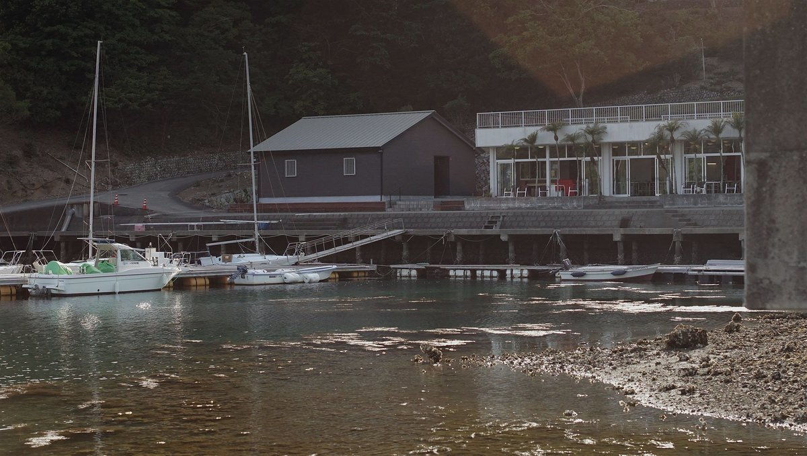Tobi (black-eared kites) circled overhead, their feather fingers like large open hands hugging the skies. These birds are a common sight in Japan. They fly with ease and turn with precision. We'd see them soaring overhead, resting on mastheads in the marina. They have a distinctive shrill whistle followed by a rapid whinnying call — a sound we came to love.
The marina had clear waters, was surrounded with trees and was quiet, so, so quiet. We loved that.
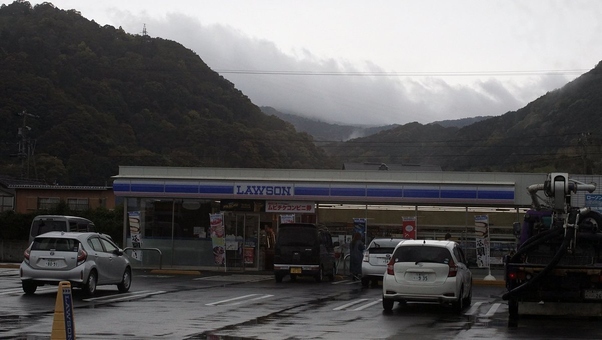We knew that this was a small town with little in it, but there were the essentials: a supermarket, a pharmacy, a post office, a kombini, a place for coffee and plenty of wildlife and nature. We walked to town on the day we arrived, under a grey sky and light rain, we wanted to explore right away. The road, initially, has a lot of ups and downs, then it branches out onto a bigger road, adjoining the towns at the end of the peninsula to the main roads in Gokasho. On the way was an open garden. In spring, butterflies would swarm the area, some as big as birds, but now, it was caterpillar season with many hanging down trees from long threads. We'd always end up with a couple on our heads and shoulders as we walked.
A day after we arrived we got a visit from two customs agents. They asked us a few questions in Japanese, asking us why we had come here. Our reply? "For fun."
In truth, we were here to just... be here. We did want to discover the area, but not in a touristy-kind-of-way. We like to visit places and stay a while, to fall into a routine and to pretend we live there. It's hardly tourism.
We said we'd be here a month, to start. They couldn't understand why we wanted to stay here. "You know there's no karaoke here....right?" This to say that Minamiise wasn't a big town, and that there aren't any 'entertainment services'. No bars, few restaurants, and no, no karaoke.
We don't care about that stuff. Our projects, and spending time outside is entertainment enough. Being here was ideal, a good place to get things done. We wondered if we'd be bombarded with Omotenashi from the locals here too, we did, a bit, but it wasn't nearly as invasive as in Shimizu. When I say invasive, I don't mean to say I didn't appreciate it, but it was a bit much at times. We're very private people.
Mr. Oka was quick to introduce us to Kako and Hiro san, two local sailors and full-time cruisers—a rarity in Japan. Another plus is that they both spoke very good English. While we like to practice our Japanese, we can't really go in-depth on certain topics. We were able to do that with them, it was a nice change!
The two have many boats in the marina, 3 in all. Their main yacht is in France. They spend a few months cruising there, then return to Japan. They've been doing this for a few years. They own two houses here in Minamiise, two wonderful properties with amazing views. One of them has a window looking over the entrance to Gokasho bay, when we came sailing in Kako saw us.
The two were kind enough to invite us over for dinner, they made a wonderful all-plant meal for us. Kako steamed some tiny taro roots and made delicious rice with young bamboo and fresh sanshou leaves (they had a tree outside). She also cooked some tempura, some of the best I've ever had. Hiro insisted on driving us back, even if the marina was only a short walk away. "The forest is dark, there are wild boars and deer here. Don't want to get trampled." We nodded, my mind conjuring images of giant boars 'Princess Mononoke style'. We never did see boars, but in the evenings, there were deer everywhere. Walking around at night was scary, there was little light, and plenty of rustling in the trees.
Both left to go back to France after that. We enjoyed their company and look forward to meeting them again next year.
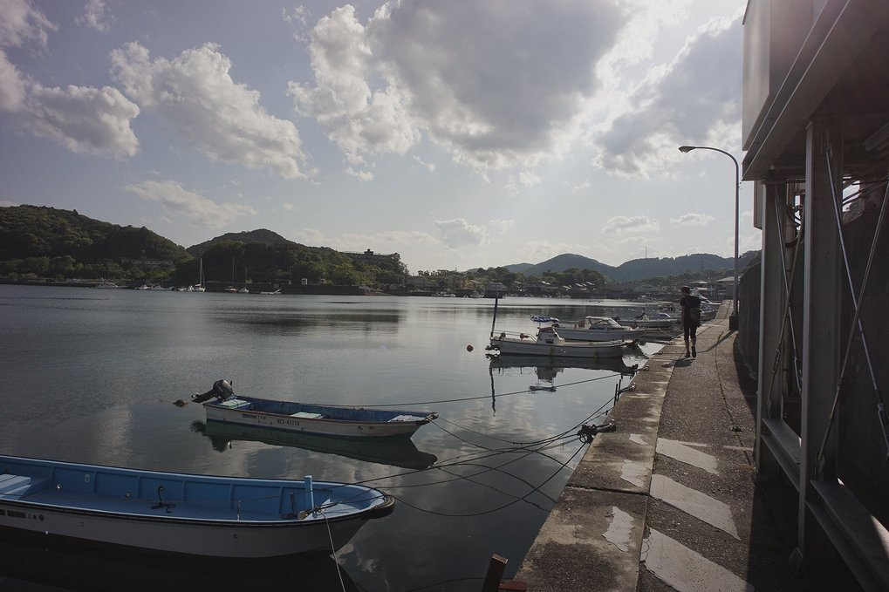Minamiise is a beautiful place. Many of the houses in Funakoshi (our sub-district) were abandoned, neglected, the steps leading up to them covered in branches and greenery.
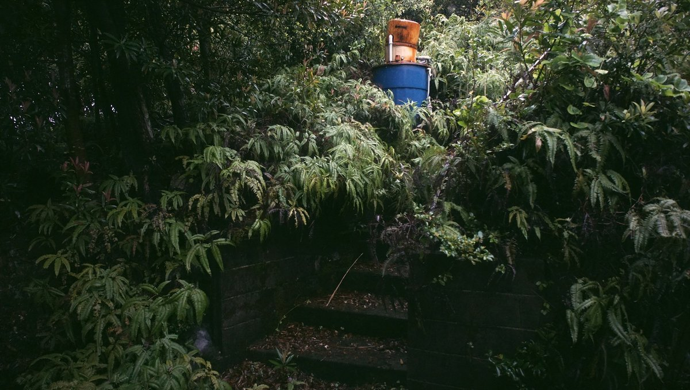Some houses we noticed were well-kept, with their owners coming by during holidays. It appeared that few people lived here full-time. Many houses had black and yellow rope tied around the property, as if to tell people it was off-limits. All the nicer houses had this.
The town of Gokasho 五ヶ所 (a 30-40 min walk away) had many more homes, a few without owners — why so many empty homes? Japan has an aging population problem, with a growth rate that's going to bring its current population of 127 million down to 88 million by 2065. Within 20 years more than one third of its residents will be 65 and older.
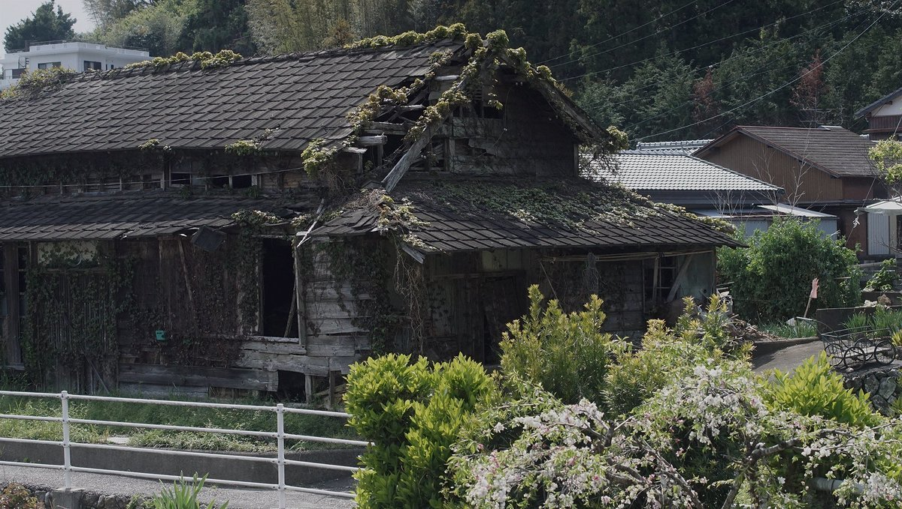No one will live in many of these houses, ever again. They will be demolished someday, when/if they pose a threat — although it takes money to do that too and is why many are left standing. The bulk of the population in Japan chooses to reside in metropolitan areas. This is true for the old and the young, people aren't interested in making a life in rural areas. There are few businesses, and the few that there are, are seldom open and we fear that they too, will die with their owners.
We walked into a camera shop one day to try and get a film developed, the owner was asleep. Business was NOT booming.
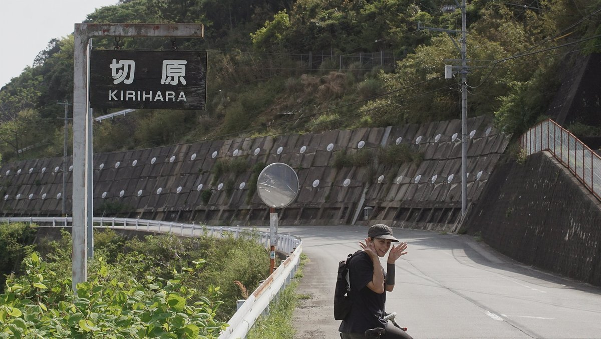We arrived in Mie in late winter with the weather being nice and cool, perfect for cycling. We explored much of the area, circling the small town of Gokasho and the neighboring town of Kirihara 切原 many times. Kirihara is north of Gokasho, a town with few stores, much of its land occupied by rice fields. At this point in the year, the fields were completely flooded with few plants sprouting. During our time here, the sprouts grew taller and taller, each stage marking the passage of time.
Minamiise isn't particularly known for its rice, but it is known for its fish and its seaweed. In late winter, we'd see locals drying out hijiki in Nakatsuhamaura and selling their wares (like green aosa) in stores.
We loved cycling to Nakatsuhamaura 中津浜浦, a small ocean-side town. The village was bordered by a sea wall, and all the buildings were nestled close together, with onions drying and small gardens everywhere. The town was very quiet. We liked to go skateboard by the side of the water.
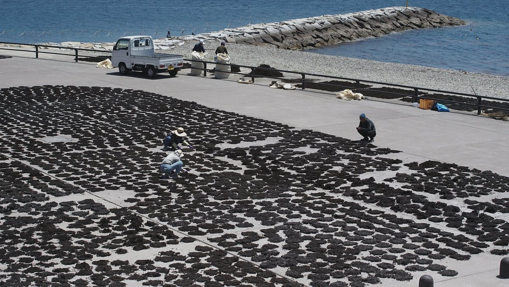Even if we had the option of riding our bikes to town, we enjoyed walking there too. The road was quiet, few cars used it. Everytime we went out to walk, we'd spot a different creature on the bark of a tree, or scurrying across the road. During one of those walks we saw a mukade, a very large species of centipede that can grow up to 20 cm long. They had dark bodies, with the rest covered in bright oranges and reds — striking colors. The way their legs moved in perfect synchronous waves was hypnotic. While mukade were a rare sight, we'd see many crabs. All sorts.
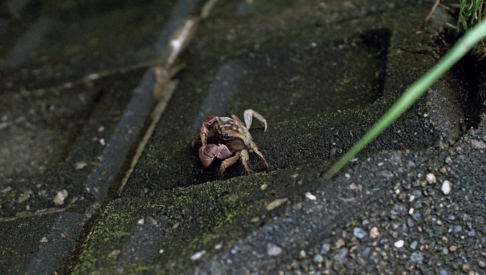The first time I saw a crab on land was in French Polynesia. At the time, I didn't know crabs could live in forests, in my mind, crabs only existed near water. There were many types of crabs on the roads here, jumping into crevasses as soon as you came near. I would sometimes see some in the marina bathroom stalls too. "You have strayed, do you know where you are little one?" I'd ask. In response, they'd inch deeper into the stall, eager to disappear. Devine claimed to have seen a Huntsman spider in here, a very large variety of spider. These, like mukade, are known to hunt cockroaches.
Another 'less fun' variety of insect found widely in Japan are cockroaches, or gokiburi（ゴキブリ）in Japanese. Japan's climate is ideal for gokiburi. So ideal, that for a while, they had a website forecasting the likelihood of cockroaches in your area. As soon as winter ends, they emerge, and frighten entire households. It doesn't matter if your home is clean or not, if they find a crack in the door they'll get in. We weren't careful in the beginning, not aware of their presence, but soon we realized we had to fill every crack to avoid unwanted lodgers. Japan sells a variety of products to fight them. The most successful we tried was Gokiburi Hoihoi (ゴキブリホイホイ). The name made us laugh. 'Hoi Hoi' means 'Shoo!', or 'Shoo shoo cockroaches!'
When you buy a Gokiburi Hoihoi box, you get a foldable 'house', a friendly motel, decorated with cute and colorful illustrations. A dream house for goki and friends. Some food pellets were set in the middle of the box, surrounded by very sticky stuff. On the first day we set one outside in the cockpit, where they tend to linger. We caught 3 gokis. The next day, we caught two. Soon, the motel was fully booked. No vacancies.
We used capsules as a first tactic, little domes with a deadly treat inside (boric-acid based), but the gokis didn't care for it.
While we loathe the sight of them near our home, gokiburi are an interesting breed of extremophiles. They can live without oxygen for 40 mins, without water for 1 week, and without food for even longer! Their diet is varied. They share our interests in food, but if they can't get it they'll eat whatever else they can find. Anything. Everything is food: tile glue, toe-nail clippings, soap etc. They are true survivalists.
As much as we admire these pesky revenants though, we'd rather not find them in our galley.
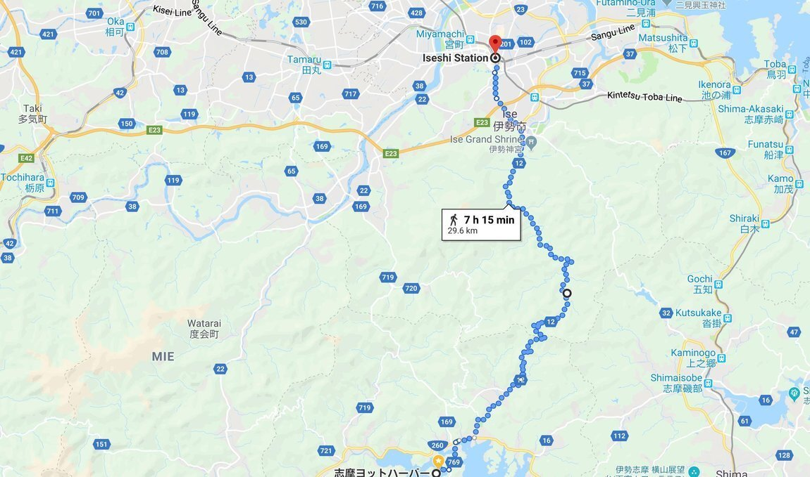We mentioned cycling to Kirahara before, it's a very nice route, not too far. One time we continued north up a forested road, but didn't go up all the way because we didn't know where it led. We weren't in the mood to get lost on that particular day. Later, we learned that this road was 30 km long and led all the way up to Ise, by way of the Ise Grand Shrine—the most popular attraction in Mie.
Perfect! We thought. We were eager to do a long bike ride. Not long after that, we got up early one morning and cycled back over to Kirihara, going through the forested path and up what turned out to be a... 300 m high mountain.
Yes. We cycled up this mountain on fixed-gear bikes. When we planned out this ride, we failed to notice the steep incline on Google Maps. Luckily, we had kombu and ume onigiri to give us energy to make it to the top. But even with onigiri, we were in a foul mood. We were exhausted and near death—we believed, at the time. We cursed as we pedaled up the winding road, wondering if it would ever end, if it was anything like that endless staircase to Bowser's lair in Supermario 64.
We did eventually make it up there. Our bad mood and thoughts of dying went away, like a passing storm cloud.
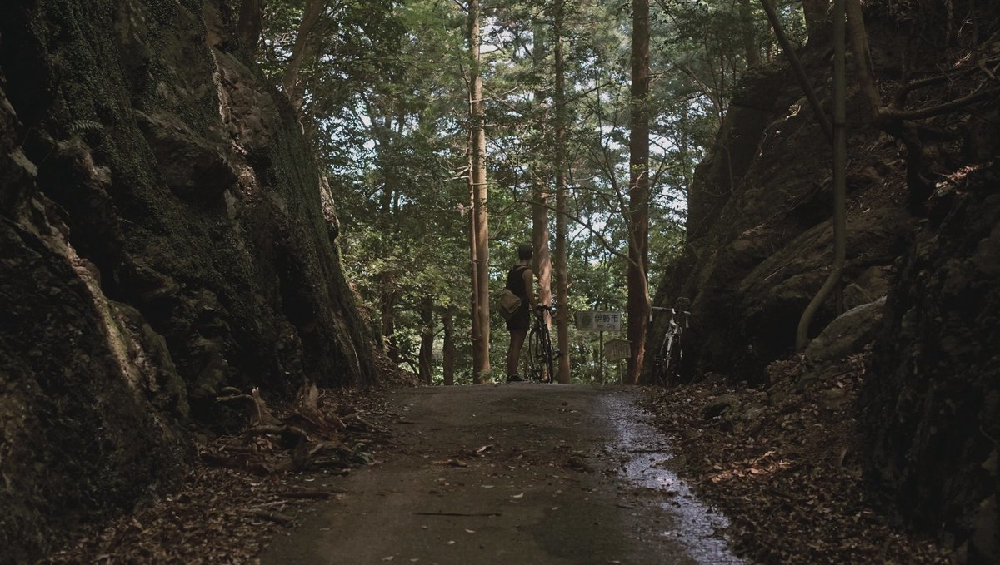There was a pass at the top of this mountain called 剣峠 (Tsurugi Toge), right where the city of Minamiise ends and the city of Ise begins. There was a sign at each end. We saw no one up there, maybe a car or two on the way but that's it. We did see one Kuroneko truck, weaving its way through the forest—a strange sight.
Cycling down the mountain was a welcome change, although it was very, very steep. Our hands hurt from using our brakes too much, palms red and sweaty. Mid-way down, we encountered a woman with plastic bins, standing by the road.

She was filling them with water from a tap on the mountain wall, "for sake," she said. The water is filtered by the sediment in the mountain. It's very clean. We had a drink and continued on our way, passing through small collections of houses. No big villages. It's during this downhill ride, that we spotted our first ever tanuki.
Tanuki are big raccoon dogs, very popular in Japan. It isn't rare to find tanuki statues in front of houses, standing there on two legs, their giant testicles in view.
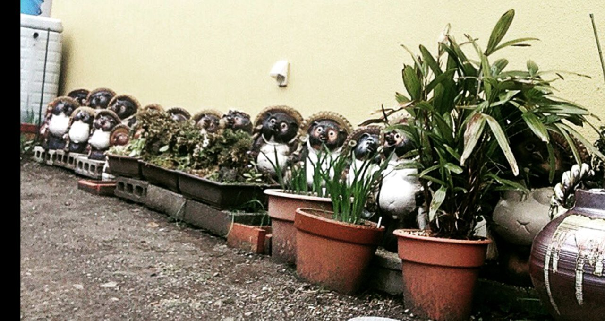In Japanese folklore, tanuki are very mischievous, fantastical creatures. They use their ball sacks to create amazing feats of magic.
There are many stories involving them, like one about a tanuki transforming into a teapot. But of course, the strangest thing about them is definitely their magical expanding scrotums. They're often depicted using their testicles as balloons, sails for boats, nets for fishing etc.
A fun anecdote, an insight into the many wonderful stories and aspects of Japanese culture. The tanuki we saw did not stay long, it also didn't shapeshift into anything—or maybe we just missed it?
Whenever you see a lone teapot in the woods, ask yourself, is this a tanuki prank?
Our bike ride led us over to the Ise Grand Shrine, the largest Buddhist shrine complex in Japan.
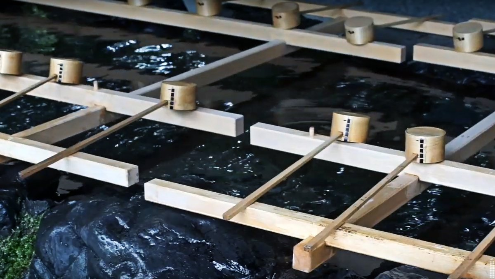A 100m wooden bridge permits visitors to cross the Isuzu river, leading the masses to the Temizusha, a small, roofed structure that contains water to use as purification. We walked over, watching as other visitors washed their hands and rinsed their mouths. This, we learned, is a symbolic act of cleaning the mind and body of impurities prior to entering. Beyond the Temizusha, lay a set of unpainted torii gates.
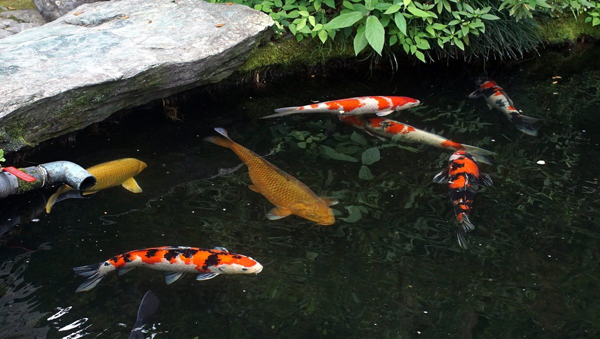After that, stood another roofed and fenced structure, inside, was a white stallion—not something I expected to see here. It was a Holy horse, or Shinme. Shinme are considered to be the mounts of God. Shrines often have pictures of them instead of real life ones, Ise jingu is an exception. In the old days, people offered them to the deities in order to ask that their wishes come true.
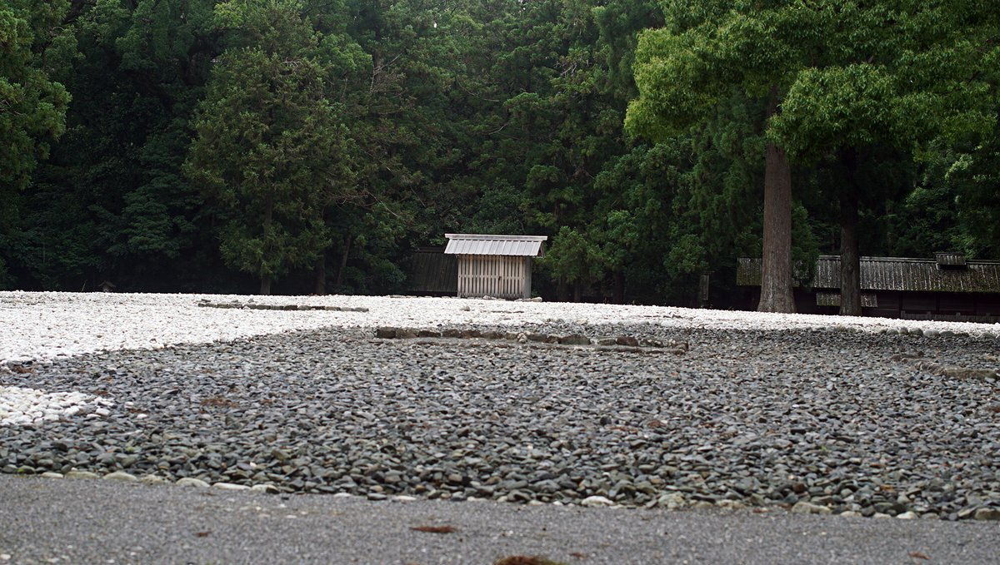The two main shrines of Ise Jingu are Naiku 内宮 and Geku 外宮. Every 20 years, the shrines are disassembled and rebuilt on a vacant lot situated right next to their current location. The reason they do this, is because of their belief in the death and renewal of nature and the impermanence of all things. They also do it to pass building techniques from one generation to the next.
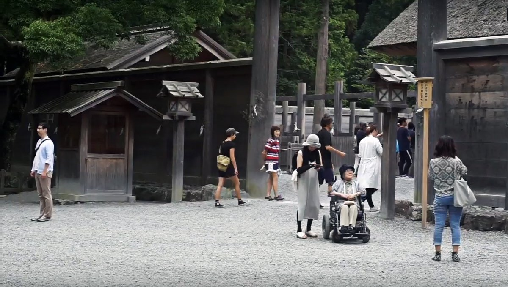It is forbidden to photograph the shrines themselves, visitors cannot lay eyes on them either because they are hidden behind several gates. The present buildings date back from 2013, they're the 62nd iteration to date and are scheduled for rebuilding in 2033.
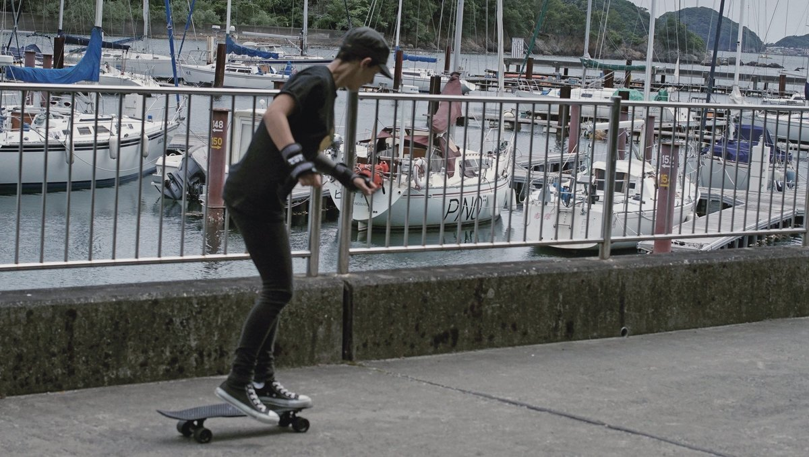Okay, not a real one. The marina lot became a skatepark for us while we stayed here in this harbor. In the evenings, we'd practice on the concrete pier, right near where Pino was moored.
During weekdays and most evenings, we had the marina to ourselves where we could play, undisturbed.
After many months in Minamiise, the place without a karaoke or train station, we realized we need very little to be content. All we need is each other's company amongst trees, with the opportunity to bike or skate every now and then.
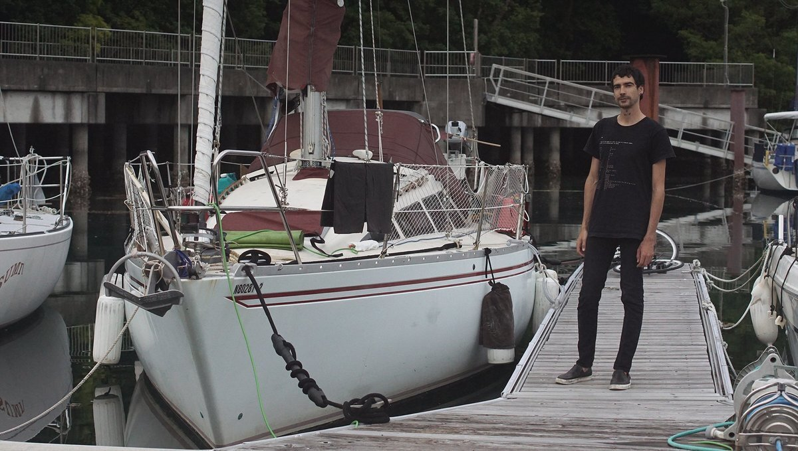We hadn't planned to stay here long, maybe a month, but when we looked at the rates for long-term stay we began to consider leaving Pino here for the winter. Unlike many marinas in Japan, the price doesn't increase with time. They also don't require key-money or extra deposits for long stays.
When we came into Japan with Pino, we knew our stay in Japan was limited to 6 months in a year and that after those 6 months we'd need to make a decision. All in all, we wanted to spend more time in Japan. We had two options: going to South Korea with the boat, or leaving it here, and returning for another season later — we chose the latter. We've been away from our families and friends in Montreal for 3 1/2 years. This is an opportunity to see them and to return to Japan afterwards. Unlike us, Pino can stay moored here indefinitely.
After we informed Mr. Oka we were planning on staying a while, he moved us to yet another berth, to a more secure location nearest to land. This is where Pino's going to stay.
We are currently getting Pino ready, packing everything away in bags and boxes. Humidity is a problem in Japan, we're finding solutions to combat this, like making sure the boat has enough ventilation and by putting everything away. We've also invested in bags of bamboo charcoal, to absorb humidity and odors, as well as calcium chloride.
Another concern is typhoons. These storms can do a lot of damage. We'll secure Pino as best we can and the rest will be out of our hands. We think this harbor is safe, Pino is moored in the best possible spot. We've invested in extra large snubbers for our lines, and will leave nothing on deck that the wind can swoop up. The main and the jib are down, folded and kept inside the cabin.
We are prepared.
It does make us sad to think we won't be living on Pino for a few months, but we're highly adaptable rabbits. We'll be fine. In the meantime, the marina workers and our neighbors will keep an eye on our beloved for us.
Here's to a little bit of time of not being on a boat. An ocean of grass and concrete awaits.
See our post on our typhoon preparations in typhoons and mold. Watch a video(YouTube) of our time in Minamiise.